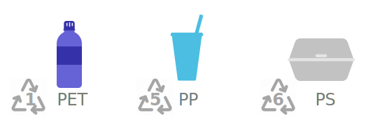
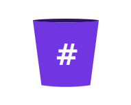

free oceans from plastic
Everyone can do a lot to help.
Even the most simple things can make a big difference.
Bringing Your Own water bottle, coffee/tea cup, glass, metal straw, food container, and any other kind of container that may reduce your use of single use is not only simple, but more hygienic and even trendier!
A simple habit to build is to always ask for No Plastic Please. Many restaurants and shops give single-use plastic to customers without even asking, but we can educate them to reduce by saying
Shopping No Plastic is usually better for our wellbeing as well as for the planet, and sometimes is even cheaper! Besides, it can be delivered straight to our home!
BIOME Australian shop with lots of amazing products with no-plastic packaging and ethical sourcing
The Sustainable Tomorrow The amazon of wiser consumers!
Who gives a crap Even toilet paper usually comes in plastic!!! Well, not always... Besides being plastic free, this ethical toilet paper is a 100% recycled, helping us reduce deforestation.
Shop naturally Fancy plastic-free options for your home and kitchen.
Go totally Package Free With all your health, beauty, living and more.
Shipping to Australia and New Zealand Here and There Makers
Well, plastic producers and governments haven't done a great job so far on educating us about the real meaning of those triangles and numbers in some of the daily plastics we consume, and they indeed look like recycling icons! Check out what each number really means to understand what can be send to recycling in your community.

We know it's hard to switch to non-plastic products for absolutely everything, for those small exceptions and for all the stuff you have collected at home, give Terracycle a go!
You can also shop the Terracycle way their smart program:
Loopso the best option is to REDUCE when possible.
All over the world there are many amazing people like you helping big deal to clean our oceans. From high-budget ideas like The Ocean Cleanup, to people from all over the world showing how much they care through #trashtag and The Celanup Challenge.

Recovering plastic debris from the environment is super easy and extremely important, and it can be fun and rewarding. You can join one of many groups and organisation around the world that organise clean-ups where you'll meet like minded people and enjoy time outdoors.